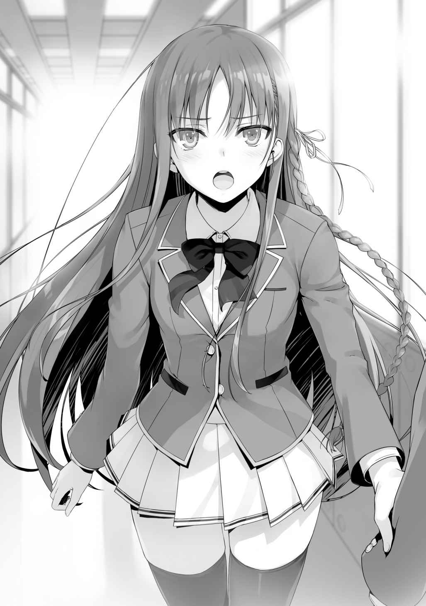

○退学者たち
ついに試験当日、土曜日の朝がやってきた。
ほぼ全クラスの状況は固まったことだろう。
Ａクラスは
Ｂクラスは誰も退学者を出さないという考えのもと動いている。
もちろんこの中から誰も退学しない可能性もあるし、全員が退学する可能性もある。
それは、
誰かを蹴落とそうとしても他クラスの賞賛票を集められれば、予定は狂わされる。
大切なのは今、この時からのことだ。
オレも１００％安全
この試験に絶対の保証などありはしない。
教室への集合はいつも通りの時間だったが、試験開始は９時から。
今、時刻は８時30分を回ったところだ。
少し
最後の最後まで生徒たちを
「あなたは結局、何もしなかったの？」
「なにが」
「自分が危機にさらされても、
「何かしたように見えるか？」
「……表面上は見えないわ」
「それが答えだ。オレは今回何もしてない。むしろおまえに助けられてる」
「そのうえで退学になったら笑えないわね」
「おまえみたいに
隣人同士、これが最後の会話になるかもしれない。
「そうね」
短く
このまま大人しく試験を迎える。
そう思ったのだが……最後の最後で、またも状況が動いた。
「皆聞いて欲しい」
ただ
もちろん、平田を
だが決定打としては弱いだろう。
Ｃクラスの中では、堀北への評価は比較的高い。
「僕なりに昨日の堀北さんの話を、他の
落ち着きのある、冷静な平田だった。
「彼、まだ何か言うつもりかしら」
「そうだろうな」
そうでなければ、この土壇場で話をしようとはしない。
「無駄なことよ。彼は無策、ただ結論を先延ばしにする話しか出来ない」
いや、どうだろうか。
平田の目には、ある種の決意のようなものが見えて取れた。
「まずは、僕が昨日堀北さんに批判票を投票すると言った件、あれを謝罪したい」
何を話すかと思えば、平田は堀北に対して頭を下げて非礼を
「謝る必要なんてないはずよ。一体どういうつもり？」
「君はクラスに必要な生徒だ、そう判断しただけのことだよ」
「なら、あなたは誰が不要だと思うか見えたの？」
「うん。見えたよ」
言い切った平田に、堀北が言葉を飲み込む。
「……それが誰か聞かせてもらえるのかしら？」
「今から言うよ」
ゆっくりと自分の席から移動し、
ちょうど昨日
「僕は、このクラスが大好きだ。全員が、必要な存在だと思っている。誰に何を言われても、その結論は変わらない。だけどそれじゃ解決しないことも、もうわかってる」
悩みぬいた末、平田がたどり着いた答え。
昨日聞いたことと、何も変わってはいないだろう。
「僕の名前を───
あるいは、そう思っていた通りの発言が平田から発せられた。
「そ、そんなことできるわけないじゃないですか！」
そう叫ぶみーちゃん。立て続けに他の女子たちからも声が上がる。
「僕は退学になってもいい。それだけの覚悟を、今は持てているつもりだよ」
「何を言い出すかと思えば……あなた正気？」
このまま平田の好きに発言させても良いところを、堀北は思わず声を荒らげた。
「いくら退学者を選びきれないからって、自己
「堀北さんは言ったよね。退学を希望する生徒がいるなら、話は早いって」
「それは───」
「だから僕が立候補する」
「あなたの退学を本心から望む生徒なんて、このクラスにはいないわ。争いを治めるためにクラスのまとめ役であるあなたが抜ける。あまりにも馬鹿げた話よ」
「それでも僕は構わない」
もはやＣクラスの中は
誰が誰を落としにかかっても不思議ではなくなったからだ。鍵を握るのは、誰に批判票を入れるかという点から、誰が
平田が抜けると、それ以降の試験へのハードルは飛躍するだろう。
クラスの中心人物を失うリスク。
「入れられるわけないよ、平田くんに批判票なんて」
その度に平田は、心に傷を負っていることだろう。
「僕を
声のトーンこそいつもの平田だったが、言葉はキツイ。
「だから僕を楽にさせて欲しい」
「俺は……俺は平田に入れる！」
叫んだのは
「
そう、叫び続けて言った。
「なるほど。山内くんなりの、最後の抵抗というわけね……」
山内は恐らく、昨日のうちに平田に接触した。
そして退学したくないと
それも平田が退学をする意思を固めた理由の１つかも知れない。
それから長い沈黙の後、
「ではこれよりクラス内投票を始める。名前を呼ばれた生徒から順に、投票室に移動してもらう」
教室で一斉に投票を行うことはしないらしい。
盗み見ることも不可能じゃないからな。徹底した
さあ、結果はどうなるか……。
１
Ａクラス。結果発表の土曜日、誰もが冷静にその時を待っていた。
追加試験が発表された段階での退学者決め。
それに異論を唱える者は誰一人いなかった。
試験の結果を告げるチャイムと共に、
常に冷静な男は、今日という日を迎えても何も思うことはない。
いや、思わないようにしている。
高度育成高等学校に教師として赴任して４年目。
「これより、追加特別試験の結果を発表する。まずは
「まさか私が選ばれるとは思いもしませんでした、ありがとうございます」
社交辞令のように答える。クラスのほぼ全員から与えられた賞賛票。
「続いて……もっともクラスからの
どよめきやざわめきなど起こらない。
ただ
「───最下位は、批判票、36票を集めた生徒」
一瞬の沈黙。
そして───。
「
名前が発せられる。
静寂な教室に響き渡る、一人の生徒の名前。
「バカな、どういうことだ！」
結果が発表された直後、
「か、城さん……え、なんで、え……？」
戸塚自身も信じられないといった様子で、城の顔を見る。
結果は戸塚への圧倒的多数による
そして一斉にすべての生徒の
城の結果は戸塚の一つ上、批判票30票という結果だった。
「どういうことですか先生、退学すべきは俺のはずでは───」
「結果に間違いはない」
城の問いかけに、静かな口調で返す
そんな理解不能な状況を変えるように、一人の少女が口を開いた。
「城くんは、あなたに賞賛票を入れてくれたようですね。良かったですね」
それで事態を把握する。
これは何らかの手違いで起きたものではなく、仕組まれていたものだと。
「待て
「城くんが退学、ですか？ あなたは最初からターゲットではありませんでしたよ」
ばっさりと、そう言い切る。
「冗談はよせ。おまえは確かに言っていたはずだ、俺を落とすと！」
「そう言えばそうでしたね。私があなたを落とすと口にしていたのは……あれは
柔らかく
「
「答えはシンプル。戸塚くんはＡクラスに何もメリットを生み出さないからです。一方で城くん、あなたは頭の回転も早く、運動神経もけして悪くはない。冷静さも兼ね備えているあなたは、それなりに役に立ちます。不要な人間を処理するのに打ってつけのこの試験で、優秀な人間を切るバカはいません」
「ぐっ！」
もっとも坂柳の狙いはそれだけではない。
城についていた生徒は元々、戸塚だけではなかった。裏切り者には
城に協力すれば、真っ先に処罰されてしまうことを植え付ける。
「なぜこんな回りくどいことをした……」
「極力リスクを避けるのは当然のことでは？ この試験、
他クラスの気まぐれで戸塚を救おうとする動きが出てこないとも言い切れない。
だが
「お疲れ様でした戸塚くん。この学校を去ってもお元気で」
「う、く、くっ……！
崩れるように背中を丸める戸塚に、城は声をかけに行くことも出来ないでいた。
城が退学にならなかったということに、本来であれば戸塚は多いに喜んだだろう。
しかし自分が退学になってしまった今、もはやそんなことはどうでもよくなる。
むしろ城ではなく自分なのかと
城が退学になっていれば、戸塚
悪いと思いながらも、
その全てを不意打ちで失った。
「２０００万ポイントによる救済は───行えないだろう」
「ええ。私たちのポイントを全て足しても、残念ながら届きません」
「戸塚、この決定を
担任教師である
「…………」
戸塚は言葉を失い、ただゆっくりと
「ひとまず戸塚を職員室に連れていく。荷物は後で俺がまとめておこう」
せめてもの
退学が決まった状況で教室に残り続けても、心が痛むだけだからだ。
「ところで真嶋先生───。１つお聞きしてもよろしいでしょうか」
「なんだ坂柳」
戸塚を連れ教室を後にしようとする真嶋を呼び止める坂柳。
真嶋は戸塚に廊下で待つよう指示を出し先に行かせる。
「今回の試験では戸塚くんが悲しき
「
「その結果次第では、城くんには影響が出る恐れはないのですか？」
「何を言っている坂柳」
「参考までにお聞きしているだけです」
真嶋も城同様、
もしやという可能性を考慮していなかった。
しかし
「……誰が退学になろうと、影響はない。『アレ』はそういうものではない。もし影響があるようなら、おまえも
「確かにそうですね、ありがとうございます」
真嶋が教室を出たところで、
慌てて立ち上がった
万が一の暴力
だが城が言葉を発するよりも先に坂柳が動いた。
「私を城くん。この試験では必ず誰かが退学にならなければいけなかった試験。あなたであろうと
「……分かっている」
暴力行為など最初から想定にはなかったが、城は坂柳に不満をぶつけるつもりだった。
だが、その切っ先を坂柳に折られてしまう。
「それならば良いのです。この先
「分かっていると言っただろう。これ以上他の生徒を狙う
「話が早くて助かります」
もしも城が、戸塚を退学にされた恨みから坂柳に牙を城はＡクラスでも上位に
これで城は完全に屈服した。坂柳に対して、成す
「さて───他のクラスは今頃、どうなっているんでしょうね」
もちろん、坂柳にとってみればＢクラスやＤクラスなどは論外。
あくまでも
２
Ｃクラス。
カタカタと貧乏揺すりをする
「おい……ちょっと静かにしろよ
小声で注意する
「う、うるせえな。わかってるよ」
「フフフ。どうせ君の敗北は決まっているようなものだよ、違うかい？」
「なんだよ。何言ってんだよ
山内がゆらりと後ろを振り返り不気味に笑った。
「このクラスでは、恐らくかなりの生徒が君の名前を書いたはずだよ」
「そんなことはない。今回退学するのは僕だよ」
「まだそんなことを言っているのかい君は。何も見えていないんだねぇ」
「……どういうことかな」
高円寺は、不敵に笑いながら携帯を取り出した。
「僕のところにクラスの女子何人かからメッセージが回ってきたよ。メッセージはこうさ。『明日
平田が高円寺に近づき、携帯に目を通す。
「こんなメッセージを見せられたら、多くの生徒が同情する。君がクラスのために行動してきた１年間は幻じゃないからねぇ。むしろ賞賛票が増えたんじゃないかな？」
「そんな……」
平田が
それで慌てるのは、当然退学の危機に
「あなたは冷静ね。まるでもう、結果が見えているみたい」
「おまえだって分かってるだろ」
「だとしても、そこまで堂々とは待てないわ。余程の確信がなければ、不安は残るもの」
「震えて待っているのは彼だけだよ」
ほぼ全生徒の視線が、山内の背中に突き刺さる。
それを受け山内は何を答えるのか。
ゆっくりと立ち上がり高円寺の方を振り返る山内。
その顔には勝機が見え隠れしていた。
「……へっ」
そんな高円寺に対し、山内が鼻で笑う。
「もういいか、話しちゃってもさ……。退学するのは俺じゃないんだよ」
「ほう？ 理由を聞こうか」
「いいぜ、教えてやるよ」
好き放題されるのが、もはや我慢ならなかったようだ。
「何人がこの中で俺に批判票を入れたんだよ。20人？ 30人か？ 俺は別に、おまえらを裏切ったわけじゃないのに酷い仕打ちだよホント！ でもいいさ、許してやるって」
へらへら笑いだし、近くの池の肩を
「悪かったな
「あ、ああ」
何が何だか分からず、池は
「このクラスで退学候補なんて、数人じゃん？ 俺か、
「まるで君は、賞賛票が沢山取れるような言い回しだね」
「そうさ。事実取れるんだよ」
「仲のいい友人が、同情して君に賞賛票を入れているとしても、精々４、５票だ。それでセーフティーゾーンだと言えるのかな？」
「いいんだよ。それだけあれば十分さ。は、はは……そう、無駄、無駄なんだよ」
「俺はさ、
もはや隠しても無駄だと悟った山内は手の内を見せることにしたようだ。
「だから何人書いたって無駄なんだよ……俺はＡクラスに守られてるんだ！」
投票は既に終わっている。
山内が坂柳とそんな約束をしたのは事実だろう。
Ｃクラスから５票、Ａクラスから20票受け取っていると仮定するなら、山内の最終結果はどれほど悪くても批判票９票までと言うことになる。
確かにその結果なら、まず退学ってことにはならない。
オレや高円寺。あるいは次点に挙げられていた須藤や
「なら、なぜそこまで不安になる必要があるのかな？」
小刻みに震え、落ち着きのなかった山内。
それは心理的に不安が大きかったことを証明している。
「それは……」
「敵と約束をするのなら、しっかりと契約を交わしたのかい？ 交渉の基本だよ？」
「い、いや、だからそれは……」
「口約束なんて
「わかってるんだよそんなこと！ でも大丈夫なんだよ！」
高円寺の言葉など、山内に届くわけもない。
もはや賞賛票を
昨日の夜、きっと何度も坂柳に確認したに違いない。
「これはこれは、それなら安心だねぇ。私が君に投じた批判票は無意味だったかな？」
「そうさ、無意味だよ無意味！」
「静かにしろ山内。廊下にまで叫び声が聞こえてきたぞ」
そのタイミングで、
「待たせたな。これからＣクラスの結果発表を行う。全員席につけ」
ついに審判の時が来た。
間もなくこのクラスから、一人の生徒が退学する。
大丈夫だと自分に言い聞かせる
次点で退学者候補だと告げられた
冷静に時を待つ
いつもと変わらない
そして静観するオレや
あるいは、それ以外の誰か。
「ではまず、

上位陣で名前を呼ばれ、田は安心のため息をついた。
昨日山内にターゲットにされたことが、逆に賞賛票を集める結果になったか。
クラスメイトに
「次いで……２位だが……」
少しだけゆっくり読み上げる
オレにも結果がどうであるかは、予測しきることは出来ない。
「平田
「っ！」
自らの名前を呼ばれた瞬間、平田は目を閉じ天を仰いだ。
クラスメイトの前で見せた
それだけ平田は、この１年間身を粉にして尽力してきた。
特に女子からの信頼は絶大なものだろう。
オレが根回しして
「で、でもさ、平田が２位って……１位は誰だよ」
本来は平田と田のツートップが予想された。
３位と２位で十分予想通りの期待には応えているが、その２人を抑えた人物がいる。
「───１位は……」
名前を読み上げる前、一度笑った茶柱。
オレは一度目を閉じる。
「
やっぱりそういう結果になったか。
「な、なんで!?」
真っ先に反応したのは、最下位を争うはずだった山内。
「
「いいや。賞賛票１位で間違いない。42票という見事な結果だ」
クラスの大枠を越えた賞賛票に、クラスメイト全員が驚いたことだろう。
「あなた、何をしたの……」
隣の
「言っただろ。オレは何もしてない」
何かをしていたのは、すべて
「そして
二度、
理解が及ばないまま、ただ退学が告げられる。
「さ、さんじゅうさんひょう!?」
これでＡクラスからは
２位は
友人たちもけして安全なゾーンにいたわけじゃないことが分かる。
「嫌だ！ なんで、なんで俺が退学しなきゃならないんだよ!!」
山内は近づいてきた
「……春樹……」
友人である池、須藤は目を伏せることしか出来ない。
何とか残ってほしいと思いながらも、結果の時を待っていただろう。
そして同時に痛感したはずだ。
山内が落ちなければ、自分たちがどうなっていたか分からないと。
「なんで、なんでなんで！ なんでだよ!! こんなふざけた試験、ふざけた試験で！」
「どう思うのもお前の勝手だが、この決定は取り消せないぞ山内」
「うるっせえ!!」
腹の底から叫ぶ。
受け入れがたい現実に、
「そうだ。坂柳、坂柳に聞いてくださいよ！ 俺に賞賛票入れるって話だったんですよ！ 約束を守らないなんて、許されていいんですか！」
「その明確な約束を示すモノを、おまえは持っているのか？」
茶柱が問う。
「約束したんですよ！ カラオケで！ 俺聞いたんですから！」
「信じてやりたい気持ちはあるが、それでは何の証明にもならない」
「ひでぇ、ひでぇよ……！」
「退室だ山内」
そう告げられても、体は動かない。
「早く退室したまえよ。君の存在はもはやデリートされたのだよ」
「認めてねえよ俺は！」
「最後の最後まで君は惨めで
「あああああああああああああああ!!」
自分の座っていた椅子を握りしめ、
振り上げた両腕を、高円寺の頭部に振り下ろす。
直撃すれば痛いでは済まないが、単調な攻撃がヒットするほど高円寺は甘くない。
軽々と椅子の足を
「私に殺意を向けたんだ。何をされても文句は言えないよ？」
山内の顔が引きつる。
「そこまでだ」
高円寺の危険な気配を察知し、
それを受け高円寺は、椅子から素早く手を放した。
「これ以上はやめておけ山内。おまえのためだ」
クラスメイトからの悲痛な視線。
憐れむ視線。
山内の中で、何かが壊れていく。
「う、うああああ！」
その場に崩れ、鳴き声とも悲鳴とも取れる声をあげる。
「……退室だ」
茶柱に改めて言われ、山内は最後の
３
一人欠けた教室。
それはいつもの教室とは、やはり大きく異なっていた。
重苦しい空気。晴れない心。
誰が退学になっても、きっとそれは変わらなかったものだろう。
それでも誰かが消えなければならないのなら、当然優劣を決める必要がある。
クラスにとって必要な生徒は誰なのか。
クラスにとって不要な生徒は誰なのか。
それを決めなければならない。
一人、誰かが席を立った。
それを皮切りに、
一日休みを挟んで、また月曜日が来ればこの教室に顔を見せる。
その時には山内の姿はない。
「思ったよりも重症ね、彼」
彼、とはもちろん
ボーっと座ったまま、動こうとしない平田。
山内がいなくなってから、平田はずっと半放心状態だった。
「
それを心配したみーちゃんが、恐る恐る声をかける。
だが平田は軽く視線を向けただけで、何かを話そうとはしなかった。
このクラスに対して、今平田は何を思っているのだろうか。
それは本人にしかわからないことだが、前を向いてもらうしかない。
そんな平田の様子を見ていられなくなった生徒たちは、ゆっくりと帰り
『今日は、私たちも大人しくしておこっか』
そんな
「帰るか」
オレは、まだ教室に残っていた
「なんだい
「おまえがクラスのために行動するとは思わなかった」
「それはそうさ。私としても退学を避けるためには
「そのことじゃない。
退学となれば山内はクラスメイトを憎む。
だが高円寺は終始、誰よりも山内を煽り続け、その対象を自分だけに向けさせていた。
退学を告知され明らかに理性を失っていた山内を自分の手で処理した。
周囲の目には、ただ単純に嫌な
「さて、覚えはないねぇ。
「そうか。ならそういうことにしておく」
教室を出ると、その後を堀北がすぐに追ってきて、オレの腕を
「綾小路くん。あなた……いつからどこまで見えていたの？」
オレはこの試験、
一方で、山内を使ってオレを退学に追い込もうと動いていた。
つまり違反に触れてもおかしくないこと。つまり矛盾が生じる。
それを無くすためには、
つまり、Ａクラスの持つ他クラスへの
こうすることでＣクラスの批判票がオレに20票30票集まろうとも、オレは一気にプラス域に突入する。絶対な安全
だからオレは
「言わなかったか？ オレは今回の試験に、ハッキリとした意味じゃ参加してない」
「……でも……」
「それじゃ帰る」
「
その場に立ち尽くす堀北からの叫び。
「あなたなんじゃないの……？ 兄さんに、山内くんと
それに応えることなく、オレは階段を降りる。
一階にある掲示板を
今回の試験結果、他クラスがどうであったかが記載されている。
クラス内投票結果
退学者
Ａクラス
Ｂクラス なし

Ｃクラス
Ｄクラス
以上３名。
この試験によるクラスポイントの変動はなし。
「
この試験結果を確認するためか、ある生徒が姿を見せる。
城と、そしてほぼ時を同じくして
「おまえも退学しなかったんだな、城」
「……それはこちらのセリフだ。おまえこそ消えると思っていた」
「クク。どうやら俺には死神が味方してくれてるらしいからな」
「死神だと？」
「気にすんな。お前には見えない死神だからな」
笑って、龍園は結果を見る。
「しかし坂柳のヤツも面白い手を打つじゃねえか。あえておまえの唯一の味方を切り捨てて見せるなんてよ」
愉快そうに話す龍園の城は悔しそうな顔を
「完全に心を摘み取られたか」
「これ以上俺がむやみに動いても、何一つ得はない」
「大人しく卒業まで坂柳について行くのか？ 面白い冗談だぜ」
「…………」
だが、その城の顔にはどこか鬼気迫るものがあった。
ずっと城を
それは同時に、城にとって守るべき存在の欠落に他ならない。
「なんだよ城。おまえもそんな顔が出来るんだな」
その様子を見て、龍園もまたオレと似たような感想を抱いたかも知れない。
「今のおまえなら坂柳に一杯食わせることも出来そうだぜ」
「……冗談はよせ。それより貴様こそどうするつもりだ。死神に拾われた命だろう。また坂柳や一之瀬、
「俺は興味ねえよ」
即座に吐き捨てる。
「おまえらＡクラスとの契約はまだ生きてる。俺は地味に搾取を続けて、もうしばらく適当に遊ばせてもらうさ。今日はその礼を言っておこうと思ったのさ」
どうやら、それでこの場がセッティングされたらしい。
一足先に城は帰路に就くようだった。残されたのはオレと龍園。
「少しだけツラ貸せよ」
オレは否定することなく、龍園に先導されるまま校舎裏へ。
「いつからおまえは善人になったんだ？
「オレは何も関与してない。って言っても通じる相手じゃなさそうだな」
何をしたのか。龍園にはすでに見えているはずだ。
「オレが何かしたというより、おまえを
数日前のことを思い出すように、オレは空を見上げた。
４
今回の結果、Ｂクラスからの退学者不在。そして龍園の残留。
この２つの大きな出来事には、オレが裏で関与していた。
それは、ひよりと図書館で会い、
夜中の10時を回った頃、部屋のチャイムが鳴った。
オレの部屋を訪ねてくる友人は少ない。
しかし大抵の場合は事前にチャットなりメールで連絡が入る。
ところが携帯には何一つ連絡が来ていない。つまりその手の客人じゃないということ。
一体誰が訪ねてきたというのか。
「……初訪問、だな」
インターフォンに映し出されたのは、思ってもいなかった２人組。
寒そうにしながらこちらの応対を待っている。
「門限……は上層階だけだったか」
午後８時以降、女子のいるエリアに立ち入ることは原則として禁止だ。
まあ、規則を破ってもバレなければ大事にはならないし、バレたところで一度や二度では厳罰は待っていないが。ともかく女子がやってくる分にはルール上問題がない。
「はい」
こっちとしては歓迎というわけじゃないが、いつも通り対応することにした。
「……ちょっと話がある」
男の方がそう言って切り出した。カメラを
「ちょっと待ってくれ」
玄関に向かい鍵を開ける。すると勢いよく扉が開き……Ｄクラスの
下手したら殴り掛かる勢いだ。
「邪魔するぜ。おまえも早く入れよ、寒いんだからよ」
「だからなんで私が……」
そう不満を
「いいから早くしろって」
「ったく」
石崎に
確かに冷え込む風が入ってくるので、急いで扉を閉めた。
玄関では
「それで、こんな夜中に何の用だ？」
こちらから聞き出すと、石崎は勢いよく手を合わせた。
「頼む
「……なに？」
夜中に２人押しかけてきたと思ったら、とんでもない頼みごとをされてしまう。
「聞き間違いか？ もう一度言ってもらってもいいか？」
「だからよ！
どうやら聞き間違いではなかったらしい。
「やめときなって
どうやら
「そりゃ、そうだけどよ。でも綾小路くらいしか思いつかなかったんだよ」
「知らないし。あ、私は無理やり石崎に連れてこられただけだから。電話がしつこいのなんの……」
そう言ってため息をつき、
石崎からの着信履歴が50件以上も入っていた。
「俺一人で頼みにいけるかよっ。敵だぞ敵！」
「それ私がいたって一緒でしょ。ホントバカよね」
「っせぇな……」
石崎も伊吹も、互いにブツブツ言い合う。
「龍園から送り込まれた刺客、ってこともないんだろうな」
演技だとしたら大したものだが、そういうわけじゃないだろう。
「あるわけないだろ。龍園さんが……そんなこと俺らに頼むわけねえのはおまえだって分かってるだろ」
「だな」
既に龍園は、石崎に敗れたという形で幕引きをしている。
事実、退学する意思は固そうだった。
仮に退学しないつもりなのだとしても、オレには頼ってこない。
恥の上塗りのようなことを龍園が喜ぶわけないからだ。
「あんたマジで龍園に退学して欲しくないわけ？ 色々思うことだってあるでしょ」
「……そりゃ……色々あった。けど、今は違うんだよ」
「何が」
「あ？ 何がって何がだよ」
「だから、今は違うって何？」
「龍園さんがＤクラスに必要な存在だって分かるだろうがっ」
「わかんないわね。あいつのせいでどれだけ苦労させられたと思ってんのよ」
本当にまとまりなく、俺の下を訪ねてきたようだな。
互いに意思疎通が出来ていないというか、なんというか。
「とりあえず、
２人が
「あー帰りたい」
意見の合わない２人。特に伊吹は険しい表情を浮かべたままだ。
「帰りたいとか言ってんじゃねえよ。おまえも綾小路を説得しろって」
「嫌だってば」
「
一向に前に進む気配がないので、オレから話を聞いてみることにしよう。
「
「まあ、な……結構嫌われてる、かもな」
「結構って言うか、ほぼ全部でしょ。そんなとこで
「うっせぇな！ そこは結構でいいじゃねえか！」
「あーうるさいうるさい。てか
「だから喧嘩は後にしてくれ」
狭い部屋で騒がれたら隣の部屋にも響く。
ちょっと怒った風に言ったことで、やっと２人も少し落ち着いたようだ。
招かれた場所じゃないのを理解してくれたか。
それなら話を進めることができる。
「龍園の退学を止めるのは
包み込むような表現はせず、ストレートに伝えた。
その方がこの２人には
「でしょうね」
だが、
「そこを、何とかならねえのかよ！」
勢いだけは本物だな。龍園を救いたいって気持ちだけは間違いなさそうだ。
「本気で龍園の退学を止めたいんだな」
「……ああ」
オレや伊吹、少数を除き、多くの生徒は石崎が龍園を嫌っていると思っている。
もちろんそれはオレや龍園との出来事があったためだが、それでも石崎はこれまで龍園に多くを
これもまた１年間という時間の中で
ただ、感情だけでどうにかなる試験なら誰も苦労しない。
「無茶だと思う理由は大きく２つ。今回の追加試験はクラス内が持つ
「け、けどよ、龍園さんの力抜きで勝ち上がれると思ってるヤツは少ないぜ？」
確かに、Ｄクラスの中には龍園の力を認めてる生徒もいるだろう。
だが、それだけじゃまだまだ弱い。
自分が退学するかも知れないというリスクに
「嫌われ者の
「最悪上のクラスには上がれなくても、安全に卒業まで行きたいでしょ。誰だって高校中退なんて肩書きを持つことだけは避けたいんだし」
恐らくクラス内では、そう言った話し合いは既に行われているはずだ。
「龍園に反旗を
「伊吹と、アルベルト、それから
「どう見ても詰んでるでしょ？」
「ああ、詰んでるな」
それも完全に。
「だからおまえに頼りに来たんだろ。龍園さんに勝った、おまえに……」
「退学を避ける方法があるかないか。それ以前に聞きたいことがある」
「なんだよ……」
「龍園を助けるってことは、同じクラスメイトの他の誰かが退学になるってことだ。それは分かってるのか？」
この試験の重要な部分。それを聞いておかなければならない。
「それは、そうだけどよ……」
「もし分かってるってことなら、クラスに切りたい候補がいるのか？」
「い、いねえよ。クラスの仲間を切りたいなんて、思ってねえ」
「ならそれはもう矛盾だ。今回の試験は、
誰かを救いたいと軽々しく口にしていい試験じゃない。
「
突き放すような冷たい意見だが、それが事実一番確率が高い方法だろう。
龍園はクラスメイトから多くのヘイトを集めている。凡人が持たない度胸や奇策を思いつく人材だとしても、これまでクラスが最下位に転落していることを考えれば切り捨てられるのは必然。
「誰も……退学しないで済む方法とかないのかよ」
「当然皆考える。そして
「……でしょうね」
短く
オレが頼りにならない、というよりも最初から
「完全に時間の無駄だって。
「くそっ……！」
「龍園は何もせずに３年間を過ごすつもりだったと思う。けど、今回の追加試験の内容を聞いた時にすぐ頭を切り替えたはずだ。自分が退学させられるなら仕方がないと。だから何も言わずに、追加試験が終わるまで静かに過ごそうとしてるんじゃないのか」
自己
ただ、
「それを
「俺は、俺はっ……」
悔しそうに、強く拳を握る石崎。
龍園を救いたい、か。
敵がどれだけ多くても、慕ってくれる仲間がいるのは悪いことじゃない。
あいつは認めないかも知れないが、良い仲間を持ったな龍園。
頭の中で、１つのルートが浮かび上がってくる。
だがそれを行うには足りないものが
「何かオレに助言出来ることがあるとすれば……」
「なんだ、なんでもいいから言ってくれ！」
前のめりになる石崎。
しかし、残念ながらその希望、藁を断つことになる。
「龍園のプライベートポイントをこのまま死なせるのは
「そうね、それくらいは持ってる。使ってなければね」
「もし抱えたまま退学の処罰を受けた時、プライベートポイントの移行や分配される保証はどこにもない。それなら退学が確定する前に全てを移動させておくべきだろ。後々Ｄクラスのためになる」
分配されて目減りしてしまうなら、自分の懐に入れてしまった方がいい。
龍園もそれくらいなら応えてくれるはずだ。
「お、俺が求めてるのはそんなことじゃねえよ！ 龍園さんを助ける方法だ！」
「やめなって石崎。これ以上は無意味なんだから」
伊吹が石崎を軽く蹴り、
「でもね
頼み込んで
「そうか。石崎は？」
「ねえよ！」
どうやら、考え方こそ違っても方向性は同じらしい。
そういう覚悟。
いや、覚悟なんて立派なモノじゃない。
「残念だが、おまえたちに龍園は救えない」
「っ！」
怒りとも悔しさとも判断のつかない顔でオレを見る
「いいか？ おまえたちに出来ることは、プライベートポイントを回収することだけだ。ただ助けたいと口にして誰かを助けられるほど、これは生易しい試験じゃない」
「っざけんなよ！ 龍園さんからポイント
石崎が
「無駄なことやめなって。こいつ凡人そうな顔して、えげつない化け物なんだから」
「
「無理でしょ」
べしっと頭を引っぱたかれる石崎。
「って言うかこっちは
「う……」
頭に血の昇っていた石崎。
龍園のこととなると、冷静じゃいられないってわけか。
どうやら２人とも、行動に起こすつもりはないらしい。宙に浮いた数百万ポイントが消えてしまうのは、これからのＤクラスを思えば絶対に拾っておくべきものだけどな。
それを仲間である伊吹や石崎が望まないのであれば、仕方ないが……。
「本当はもう少し、おまえたちの覚悟が見たかったんだけどな」
「……は？ 何よ覚悟って」
「龍園からプライベートポイントを回収することも出来ないお前たちには関係のない話だ」
そう言ってオレはこの話を
５
試験前日の夜。10時を過ぎた所で、オレの携帯が鳴った。
「私だけど。龍園のプライベートポイントは全部回収した」
伊吹は事実だけを口にする。
「よくオレの連絡先が分かったな」
聞いてみたが、
確か
「そうか。回収したか」
動くとは思っていたが、かなりギリギリだったな。
「今から
「え？ いまから？」
「問題があるのか？ 回収したプライベートポイントに関することで話がある」
「別にないけど……分かった」
伊吹は短く
何かを予感していたのか、ものの10分ほどで２人は姿を見せた。
そのまま、すぐに石崎と伊吹はオレの部屋に上がり込む。
「
「５００万とちょっと」
「十分だ。足りなかったらこっちも慌てて用意しなきゃいけなかったからな」
やはり使い込んだ形跡はなかったか。
「どういうことだよ。何をどうするんだ？」
まったく先が見えていない石崎。
伊吹は既に覚悟を決めているため、迷わない。
「これを使って、あんたは何かをするんじゃないの？」
「正解だ」
「何かって……？」
「プライベートポイントを使ってすることは１つだけだ。その金で龍園を救う」
「い、いやちょっと待てよ。それって例の２０００万ポイントのことじゃねえのか？」
到底足りるはずのないポイント。
「その前に聞くことがある。石崎。おまえに背負うだけの覚悟があるのか？」
「な、なんだよ急に。つか背負う覚悟って……？」
「龍園を残すってことは、他の誰かを切るってことだ。言ったよな？」
「……ああ」
慌てつつも、
「覚悟は決めた」
「そうか。その覚悟ができたならいい。それで、誰を落とす」
「誰を落とす……」
誰を落とすかまでは決めきれていない石崎。
「お前が決められないなら、オレが決めてやってもいい。それで罪悪感が薄れるなら簡単な話だろ。もちろん、オレが不用意に主要人物を落とそうとしていると思ったなら、それに従う必要もないしな」
「ま、待ってくれ。少しだけ考えさせてくれ……」
「時間はないぞ」
「すぐ、すぐに結論を出す」
そう言っても、それで決まるのなら苦労しない。
「ちょっと待ってよ。誰を切るかはいいけど、肝心の戦略は？ 金で救うって言ったって１５００万ポイントも足りないのよ？」
とはいえ、こちらにも事情はある。
「
細かな戦略を話すのはそのあとだ。
「例えばクラスの問題児は？」
不満を抱える伊吹には悪いが話を進めさせてもらう。
「問題児っていやぁ……まぁ俺や
「龍園を残す上で、おまえのような龍園に対して理解力のあるヤツを切るのは正直得策じゃない。似たような試験がもう一度あれば、次に龍園が残れる保証もないしな」
それで
「つまり西野か真鍋……」
そう口にした。
どちらも聞き覚えがある。真鍋に関しては、オレが落とそうと思っていた生徒だ。
とは言え主導権は石崎たちにある。
落とすと決めた生徒の名前を聞き、それに従うつもりだった。
「そのどっちを落とすか。あるいは別か。それはおまえが判断すればいい」
石崎も真鍋と
落とす相手の
そういう考えが石崎に芽吹く。
既に問題としては封じているものの、恵にとって真鍋の存在が引っかかるものであることは変わりようが無い。それが１つ減るだけでも、恵の心にゆとりが生まれる。同時にオレが排除したことを恵自身に匂わせておけば、こちらに対する信頼度ももう１つ上がる。
しかし、意外なところからの一声が飛んでくる。
「私が決めていい？」
「え？ おまえ、が？」
「そ。私退学させたいヤツがいるから」
「誰だ」
石崎からのイエスを待たず、オレは聞いた。
「
「そんなんで決めていいのかよ」
「そんなのだからいいんじゃないの。違う？」
「
「わかった……。男子には、調整が入ったつって真鍋に入れさせる。龍園の次に批判票が多かったってことで、ひやひやさせるのが狙いって言えば乗ってくると思う」
「悪くないアイデアだ」
オレは石崎のアイデアを採用する。
龍園への批判票が絶対的なら、多少別の生徒の間で行き来があったとしても、
「……ま、私が沈むかも知れないけど」
「あ？ どういうことだよ伊吹」
「多分真鍋たちは龍園と一緒に私の名前も書いてくる。必然私はピンチってわけ」
「ま、待てよ。それマジかよ」
「あんた私と真鍋が仲悪いことくらい知ってるでしょ？」
「そりゃ、まぁそうだけどよ……」
頭の回っていなかった石崎が
「伊吹も覚悟を決めてきたってことだ」
もちろん真鍋以外になってしまった時には
「女子の方はひよりに相談してみればいい」
「
「今回のことで、何か力になってくれるかもな。龍園を助けるために、真鍋に批判票を集めたいと連絡しておけばいい」
「……分かった」
伊吹は
「あんた椎名と
「軽く今回の試験については聞いてみた」
あいつも平和主義な生徒だが、それでもクラスを尊重する意思は強かった。
「クラスの為になることであれば協力すると言った。龍園が残ることがＤクラスのためになると判断しているから手を貸してくれるはずだ」
男子と女子の票を可能な限りコントロールする。
真鍋に対し
伊吹に対しての賞賛票を増やし批判票を減らす。
これだけで、最初はあった大きな開きが一気に激減するだろう。
「じゃあ、あんたの戦略教えてよ。５００万程度でどうやって救うつもり？」
オレは携帯を手に取り、ある人物へとメールを送った。
するとすぐに既読がつき、オレの部屋に来ると言ってきた。
タイムリミットまで、あと２時間を切っていたからな。
よく
「何してるわけ」
「今から１人訪ねてくる。そいつが
「退学阻止の……切り札？」
それから数分して、部屋のチャイムが鳴る。
伊吹と
「俺たちがおまえといるところを見ても大丈夫なのか？」
「その辺は心配ない。ただしちょっと口裏合わせは頼むことになる」
来客が来るまでの間、オレは２人にどう話すかを伝えておいた。
６
「お邪魔しまーす」
オレたちの前に姿を見せた来客に、２人は当然驚いた。
恐らく想像もしていなかっただろう。
「マジ……？」
「うお」
「わ。もしかしたら誰かいるかもと思ってたけど……こんばんは」
「こ、こんばんは」
なぜかちょっとテレている石崎。
そう、オレの部屋に来たのは、
そして同席するＤクラスの伊吹と石崎。
伊吹は一之瀬を見て、ようやく答えにたどり着いたようだ。
「利害の一致、ってわけね」
「なんだよ。どういうことだよ」
まだわかっていない石崎は首を
「そうみたいだね、伊吹さん」
「龍園を助ける物好きはいない。仮に
「そ、そうか。
やっと
「うん。私が皆に呼びかけて、Ｂクラスの持つ40票の
打てるべくして打てる一度きりの戦略。
入学当初から、プライベートポイントを仲間から集め
この２人だからこそ実行できるパワープレイだ。
「２人が手を組めば、Ｂクラスからは退学者は出ず、Ｄクラスには龍園が残る」
どれだけ多くの
Ｂクラスからの援護を受けた時点で龍園のマイナスは全て消し飛びプラスに転じる。
伊吹と一之瀬は互いに目を合わせる。
普段絡むことのない二人の間に、築かれている信頼関係はない。
だが、目と目を見れば、信用できるかどうかはある程度判断することが可能だ。
一度、一之瀬は伊吹から視線を外しオレの目も見てきた。
「私は２０００万ポイントを使って、退学が決まった生徒を救う……だね」
そしてもう一度伊吹へと視線を戻す。
「どうする。受けるか受けないか、それを決めるのはおまえだ一之瀬」
一之瀬には選ぶ権利がある。
伊吹たちの提案を蹴って、
「私の答えは決まったよ。伊吹さんと石崎くんさえよければ、協力させてもらう」
「本当にいいわけ？」
「うん。２人の気持ちは確かめられたしね」
「あんた、バカよね一之瀬」
「えっ？」
「色々悪い
「プライベートポイントはまた貯めればいいから。１年あれば２０００万に近づくだけのポイントを貯めることも不可能じゃないって分かったしね。それに伊吹さんだって、私のこと言えないと思うよ？ 今なら、５００万ポイントを自分の懐に
伊吹は答えず視線を
「あんたと私は違う。……それに、ウチのクラスは龍園の代わりに泣くヤツが出るんだ。それが私ってことだって十分にある」
「それでも助けるんでしょ？ 龍園くんを」
「あいつに……変な借り作ったまま終わるのが気に入らないだけ」
他の仲間に
「確認して」
「うん」
一之瀬はすぐに、自分のポイント残高をチェックし、２０００万に届いているかを見る。
「ありがとう。
携帯を見せ、きっちり２０００万ポイントであることを証明する。
「ここでの交渉は、オレが証人になる。会話の内容も記録させてもらった」
携帯を出し、公平性を示す。
「伊吹は約４００万ポイントの提供。一之瀬は見返りに、40人全てが
「責任を果たしたことにはならないと思うけど、私は自主退学するよ」
もちろん、そんなことにはならないとオレも伊吹も、
巨額の金が実際にやり取りがあったことは学校の記録にも残るし、
ただ、一之瀬
これがオレと一之瀬、そして伊吹と石崎との間にあった話。
７
校舎裏は静かなものだった。
「おまえが本気を出せば退学しないで済む。そう断言したのはこの手があったからだろ？」
「ああ。一之瀬のヤツがポイントを
「頼られたついでに、伊吹たちを利用させてもらった。オレにとっちゃ一之瀬と信頼関係を構築する上でありがたいイベントだったからな。オレが直接おまえのところに出向いたら作戦を見抜いて、ポイントを渡さなかっただろ？」
「伊吹に何も説明しなかったのは正解だったな」
そんなことをすれば、龍園なら
「
「いや、それは単に偶然だ。伊吹とも仲が悪かったのは知ってるよな？」
「なるほど、あいつにしちゃ思い切ったな。真鍋のヤツ、
教室でどんな反応を見せたかは、何となく想像がつく。
「
「そうかもな」
オレはあえて、それ以上は踏み込まなかった。もし伊吹たちがあの日オレの部屋を訪ねてこなければ、オレはひよりにこの話を持って行っていただろう。
そしてプライベートポイントを回収させ、同じように行動していた。
そんな
「次も同じような試験があったら、どうする」
「クク、さぁな」
何もしない、とは言わなかった。
龍園の中にも伊吹や石崎に対する、ちょっとした気持ちはあるってことだろう。
遠くない日に龍園が前線に戻ってくれば面白くなるかもな。
もちろん、そうなるかどうかは龍園次第だが。
携帯が鳴る。画面には一之瀬の名前が表示されている。
誰かからの呼び出しだと分かった龍園は、何も言わず背を向け校内に戻っていった。
「Ｂクラスは退学者、出さずに済んだみたいだな」
「うん。
「そうか。だけど支払った代償は安くないぞ」
これで一時的にとはいえ、ＢクラスはＤクラスよりも貧乏になった。
４月に一度振り込まれるとはいえ、かなり苦しい生活を送ることになる。
それに２年になって早々、プライベートポイントが必要になるかも知れない。
こんなこと今更確認するまでもないか。
「プライベートポイントは失っても、また取り戻せる。だけど大切な仲間は、一人でも欠けちゃったらもう戻ってこないからね」
どうやら、余計なことを言ったらしい。
一之瀬には迷いがない。
Ｂクラスのメンバー全員と卒業する、そんな意思が固く見て取れた。
「龍園くんは、この結果が気に入らないかもしれないけどね。結局、退学したのは
今さっき会ってたことには触れず、その点は聞き流しておく。
「一之瀬は、真鍋とは親しかったのか？」
「私はあんまり。何度か話したことがあるくらいだったかな。それでも寂しいけど。Ａクラスからは
まだ現実に起こったこととは、思えなかったのかも知れない。
「またこんなふうに、どこかで誰かが消えていくのかな？」
不安に思った
「そうかも知れないな」
当たり前のように存在した生徒が、
「おまえはそれでも、
「うん。私は今いる仲間全員とＡクラスに上がって、卒業するよ」
これまでは、一之瀬に対して偽善者であると
だが、これで完全に
何があっても、一之瀬はクラスを守るために最後まで戦い続けると。
「……本当にありがとう、
「
「……うん」
「馬鹿なことだってわかってるんだけどね。それでクラスメイトが助かるなら、安いものじゃないかって自分に言い聞かせようとしてた。でも───こうして、その手段を選ばずに済んだことを知って、心の底からホッとしたの」
胸を
「きっと私は、いつか後悔してたと思うから」
そう言って一之瀬はまた笑った。
「もしオレや生徒会長がいなかったら、おまえはこの試験どうしてた」
「……それ聞いちゃう？」
「気になるな。何も考えてなかったわけじゃないんだろ？」
「うん、プランは２つあった。１つは、私が
やはり、一之瀬は自分が退くことも視野に入れていたか。
「けどさ、それはなんかちょっと違う気はしてたんだよね。私だってこの学校の生徒、最後まで戦い抜きたい意思はあるし」
なら、もう１つのプランが本命だったってことか。
「もう１つはね……くじ引き、だよ」
「なるほど……」
誰もが思いつきそうで、そして許可が出ず成り立たないものだ。
「Ｂクラス全員、くじ引きになることを覚悟してたのか？」
「うん。もし当日までに退学回避の手立てを用意できなかったら、その時はくじ引きをしてハズレを引いた３人の名前を記入しようってことで話し合いは決まってた。
生徒の優劣などではなく、あくまでも対等に
「出来うる限りの平等な処置だ。けど他のクラスじゃ絶対に成立しないな」
優秀な生徒ほど当然、否定する。
「誰だって退学したくないけど、仲間が消えていく姿も見たくない。ちゃんと説明したら、みんなは納得してくれた」
それは一之瀬という絶対的リーダーがいるからこそだろう。
「恐れ入った」
電話越しなので伝わらないだろうが、オレは頭を下げ、一之瀬に敬意を表した。
戦略そのものは大したことがない。
それを実行できる環境下であることが
「それじゃあ、またね。本当にありがとう、
「オレは仲介しただけだ。感謝すべきは
８
オレの下に、１通のメールが届いていたのが分かった。
「
どこで仕入れた情報か知らないが、一応顔を出しておくか。
てっきり掲示板を見に来るかと思っていたが……。
特別棟で待つとの連絡を
既に約束の時間は過ぎようとしていたが、今ならまだ合流できるだろう。
すぐに特別棟、前回２人で話し込んだ場所に着く。
「来てくださいましたか」
「メールアドレスを知ってるなら、電話番号だって
「お会いできないなら、それはそれで構わないと思っていましたから」
「話はなんだ？」
「一応、ご説明しておこうと思いまして」
そう言って坂柳は
「混乱させるような
当然、坂柳が言っているのは
「勝負を持ち越したいと
「分かっています。ですが約束を破ったことにはなりませんよね？」
「オレに対するマイナスは一切与えない。それに偽りはなかったからな」
精神的には負担を強いられたが、結果だけ見ればオレは圧倒的賞賛票の保持者。
どこにもオレから
「ありがとうございます」
軽く頭を下げ感謝を示す坂柳。
「ところで……
「確信はなかった。ただ
そうなると、城の取り巻きだった
１票投じたところで、何かが変わるわけでもなかったが。
「素敵です。やっぱりあなたは私が倒すべき相手です」
「それで？ 今回の件は単にオレをからかいたかっただけか？」
「それも……無いと言えば
「メール？」
「はい。父を停職に追いやった学校側の人間でしょう。元々は追加試験に関しても、他クラスは
「もしそんなルールがまかり通っていたら、どんな生徒でも、
坂柳も
「ええ。現職員たちの猛反対もあり、その事態だけは避けることが出来たようですが。そんなものに協力してあなたを退学にさせることほど、面白くないことはない。よってどんなことがあってもあなたを守れるよう、私はＡクラスの持てる賞賛票の全てをあなたに入れることを決めました。こうすることで仮に誰かが
「なら、なぜ
「覚えていますか？ 以前、合宿の際に彼が私にぶつかって失礼な態度をとったことを」
そう言えばそんなこともあったな。
「その報復、ですよ」
たったそれだけのことで、ターゲットにされたわけか。
いや、それだけで坂柳にとっては十分だったのかも知れない。
「しかし私はキッカケを作っただけ。彼がクラスに不要な生徒だったから排除されただけのことです」
「そうだな」
今回の試験、坂柳が関与していなくても、結果はほぼ同じだっただろう。
「と。それが今回試験を避けた一番の理由です。あとは一刻も早く父が復帰して、正常な学校運営に戻ると良いのですが───」
誰もいない特別棟。
２人だけの空間に、突如として影が差す。
「やあ、こんにちは」
１人のスーツに身を包んだ男が、オレたちの前に姿を見せる。
「この学校に来るのは初めてでね。職員室がどこにあるか分かるかな？」
「職員室ですか、それはまた
「私は、今度理事代行を務めることになった
丁寧に手を振り優しそうな笑顔を振りまく。
年齢は40代だろうか、
「フフ、そうでしたか。しかし、偶然迷ってここに足を踏み入れるとは、理事代行は相当な方向音痴のようですね。あるいは……監視カメラから私たちを見つけ、様子を探りに来たのかと思いました。この場所は試験期間中、私と
その言葉を聞いて、以前坂柳が見せた不自然な視線の行方を思い出した。
ここでオレと会っていることを誰かが見ているのなら、おびき出せるかも知れない。
そう考えてのこと。相手はそれに引っかかってくれたということだ。
月城理事代行は、そんな坂柳の言葉を笑顔で受け流す。
「面白いことを言う子だね。いやいや、とても愉快な学校だと聞いているから、
オレたちの間を通るように歩いてきた男。
「職員室をお探しながら、引き返して下ですよ？ 校舎が違います」
丁寧に教えるそんな坂柳を、笑顔のままで月城はその
その意外な行動に、当然坂柳は対応することが出来ず倒れそうになる。
「っと」
それをオレが急ぎカバーするように抱き込むと、直後大きな腕がオレの
坂柳を抱え身動きの取れないオレは一撃それを受けるが、極力衝撃を殺し坂柳を床に座らせる。立て続けに迫ってきた腕がオレの首を捉え、怪力で壁に押し当てられた。
「
喉元を強く押し込まれ、こちらから声を出すことは出来ない。
外見からは想像できないほどの力で、簡単に振りほどくことは難しそうだ。
「……随分なことをなさるじゃありませんか、理事代行」
「君には指令が行ったはずだけどね。彼を退学させるようにと」
「あのメールは、あなたのお仲間からのモノでしたか。学校関係者が露骨に生徒を退学にさせられない以上、私のような人間を頼りたくなるのも無理はありませんけれど」
ゆっくりと起き上がりながら、
「助かりました
転ぶだけでは済まなかった可能性もある。
「理事代行が生徒に暴力
「心配はいらないよ。ここを映している監視カメラはダミー映像に差し替えてあるから」
つまり、何が起きても記録に残ることはない。
「さて、父上からの伝言だよ。『これ以上子供の遊びに付き合う気はない。すぐに帰ってこい』とのことだそうです。イエスなら
言葉も
実にあの男らしいやり口だ。
「自主退学の意思なし、と」
何も答えずオレが沈黙を貫いていると、理事代行は退屈そうに
「抵抗のひとつも見せてみませんか？ 普通の子供じゃないところを見せてくださいよ」
喉元に与えられる衝撃が強くなる。
普通の学生がどうこう出来るような技量の相手じゃない。鍛え抜かれた相手だ。
「眼力だけは一人前ですねぇ。君の力、見てみたいんですが？」
もう一度繰り返される挑発。
だがオレは何一つ抵抗を見せなかった。
やがて反撃の意思がないことを悟ると、
「正式に私がこの学校で活動を始めるのは４月からです。どうぞお楽しみに」
それだけを伝え、男は特別棟から去って行く。
「賢い選択でした、綾小路くん」
オレが一切の抵抗、反撃を見せなかったことを褒める坂柳。
「相手は理事代行。オレが下手に反撃すれば、それがどう使われるか分からないからな」
監視カメラにはダミー映像を流していると言ったが、今この場のやり取りを録画していない保証はない。理事代行に暴力行為を働いた映像だけを切り抜かれたら、こっちはチェックメイトだ。
「お身体は大丈夫ですか？」
「心配ない、あの手のことには慣れてる。それよりも坂柳」
「はい、なんでしょう？」
「次の試験、正式にオレと勝負しようか」
そう告げると、坂柳は目を開いて驚いたようだ。
「あなたがそのように、面と向かって言ってくれるとは思いませんでした」
「あの男が４月から関与してくるなら、長々とおまえの相手をしてる余裕もなさそうだ。白黒ハッキリつけて、それで終わりにしたい」
「構いませんよ。二度も三度も必要ありません、喜んでお相手させて頂きます」
間もなく始まる１年最後の試験。それで
９
月曜日。
生徒たちの中には、
あの試験で退学するのは、ただの
そんな、
だが現実は非情。
教室に並べられた机の数が、週末から１つ減ってしまっている。
山内
「───では、これより１年度の最終試験の発表を行う」
オレたち１年Ｃクラスは、１年度最後の特別試験へと駒を進めることになる。